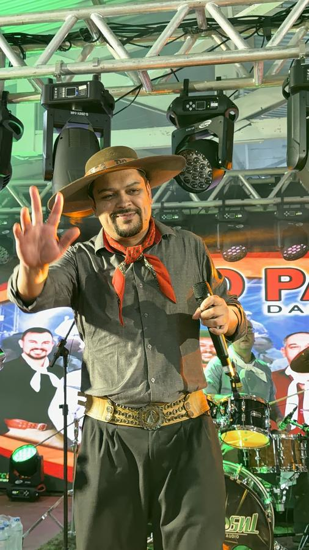
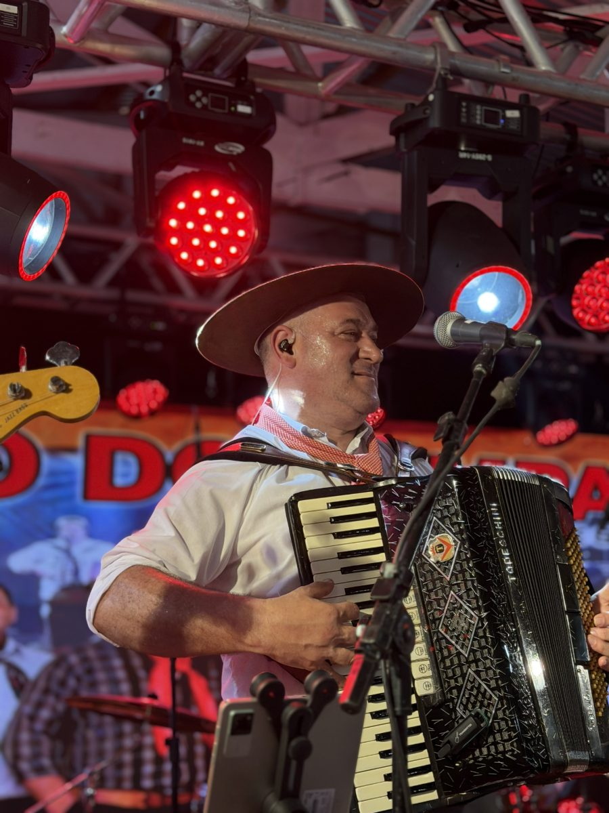
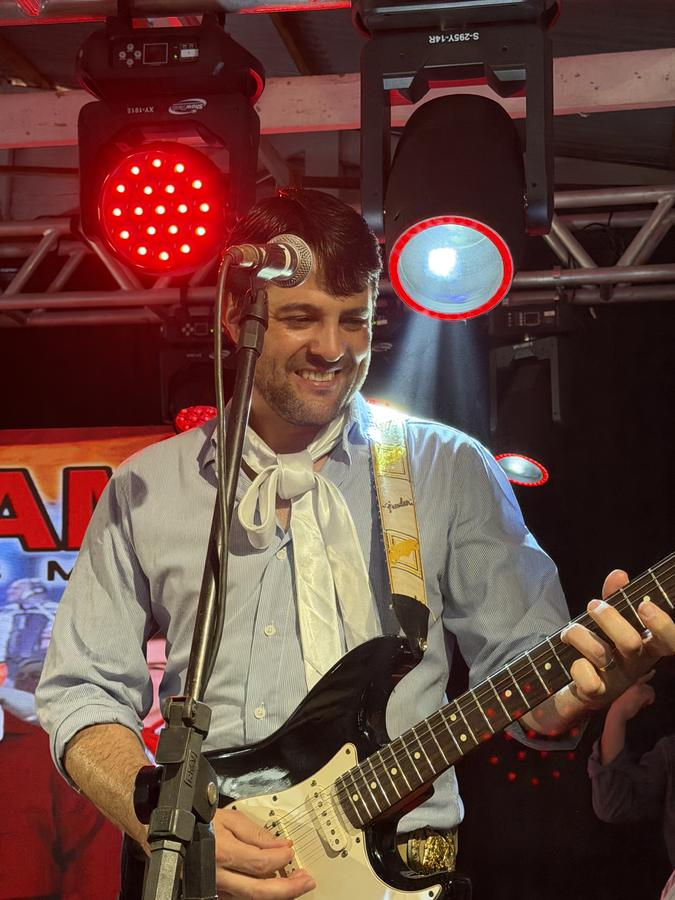
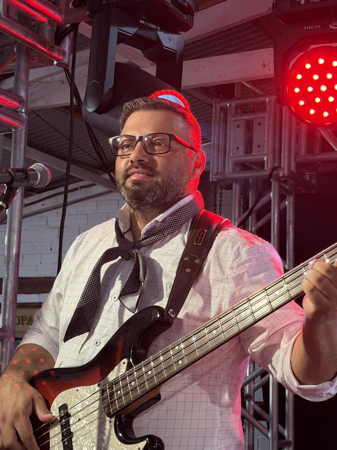

Grupo Eco do Pampa das Missões
Música gaúcha de baile, tocada ao vivo
Gaita, guitarra, baixo, bateria e voz para encher a pista em bailes, festas de CTG, casamentos e eventos nas Missões e em toda a região.
- 100%
- ao vivo, sem playback
- 1º CD
- gravado, com música própria
- Missões
- e toda a região do RS
- Agenda
- aberta para bailes e eventos
O grupo
Baile de verdade, do jeito que a gente sabe fazer
O Grupo Eco do Pampa das Missões é um grupo de música gaúcha nascido no coração das Missões, no Rio Grande do Sul. Gaita, baixo, guitarra, bateria e voz, pilcha no corpo e repertório pensado para uma coisa só: não deixar a pista vazia.
São os clássicos que todo mundo canta junto, o que está tocando agora e as nossas próprias músicas no meio. A primeira delas já está gravada no nosso primeiro CD.
Tocamos em bailes, festas de CTG, aniversários, casamentos e eventos em toda a região.
Pilcha no corpo e repertório para não deixar a pista vazia.

Ao vivo, sempre
Grupo completo tocando de verdade. Nada de playback.
Missões e região
Base nas Missões, RS. Atendemos toda a região.
Pilcha e tradição
O grupo sobe ao palco pilchado, como manda o baile gaúcho.
Formação
Quem sobe ao palco
Voz, duas gaitas, guitarra, baixo e bateria. Um grupo completo para segurar o baile do começo ao fim.




E a bateria marcando o compasso do salão.
Para o seu evento
Onde tem festa, a gente toca
Do baile de CTG ao casamento, o show se adapta ao tamanho e ao jeito do seu evento.
Repertório
Os clássicos que todo mundo canta junto, o que está tocando agora e as músicas próprias do grupo, gravadas no primeiro CD.
Ouça e assista
O grupo tocando
As músicas no Spotify e um trecho de baile ao vivo no YouTube.

Fotos
Do palco
Toque em uma foto para ampliar.
Contratar
Leve o Eco do Pampa das Missões para o seu evento
Três passos e a data é sua. Chame no WhatsApp com a data, a cidade e o tipo de evento.
- 1Chame no WhatsAppMande a data, a cidade e o tipo de evento.
- 2Receba a propostaA gente confere a agenda e retorna com tudo certinho.
- 3Data garantidaAcertado o combinado, o baile está marcado.